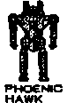
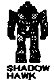
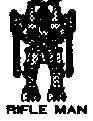
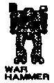
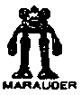
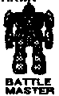

Пару слов о MechWarrior |
|---|
Этот текст написан в первой половине 90-х годов. Недавно я нашел его в своих старых архивах, почистил, дополнил, снабдил картинками и представляю вам. Поностальгируем? J
Представьте себе Галактику, в которой существует около сотни населенных планет и все они объединены в несколько (конкретно, в 5) государств. Ну, если быть более точным, то на каждой планете своя власть, а объединены они в некие конфедерации, которые называются "Дом Марик", "Дом Лиао" и т.п. Кстати, в игре есть карта, но на ней изображены не Галактика с планетами, а что-то типа материка со странами, пусть это не вводит вас в заблуждение. По карте можно бегать курсором и читать описания планет. В этом мире царят просвещенная технологическая эпоха (звездолеты, роботы, лазерные пистолеты и т.п.) и одновременно феодализм (герцоги, бароны, графы и пр.).
Вы – Гидеон Ванденбург, избалованный инфант, единственный сын герцога Ванденбурга, правителя планеты Андерс Мун (входящей в "Дом Давиона"). Однажды, когда вы числились отдыхающим у бабушки на деревенской планете (а на самом деле бухали с телками совсем в другом месте, но об этом никто не знал), вашего папашу-герцога злодейски замочили, а в убийстве обвинили, естественно, вас. Так что вы в одно мгновение из богатого наследника превратились в нищего авантюриста по кличке George Braver (по-нашенски - Отважный Гоша). Ваша задача - найти настоящего убийцу и покарать его.
Что значит - "найти убийцу"? В игре имеется хиленький квест. Нужно регулярно читать сообщения, приходящие по межпланетному радио, и выуживать оттуда информацию. Также нужно, перелетая с планеты на планету, заходить в кабаки, где вам тоже иногда могут что-то сообщить, либо там с вами что-то происходит. К сожалению, квест проработан весьма посредственно - он довольно короткий, линейный и, что самое неприятное - "безоткатный". То-есть, если вы сделали что-то не так (например, не поговорили с каким-нибудь персонажем), то вам об этой ошибке не скажут, игра будет продолжаться, но квест прервется. Вернувшись на то же место и попытавшись поговорить с этим персонажем, вы ничего не добьетесь, поезд уже ушел. Сам квест реализован в виде длинных описаний (типа "вы стоите там-то и сям-то, перед вами красивая девушка, она вам втирает то-то и се-то "), по прочтении которых вам предлагается выбрать из меню одно из действий (например, "проигнорировать", "заинтересоваться", "начать приставания" и т.п.). Если вам не выполните квест за определенный срок, то ничего страшного не произойдет - игра будет продолжаться как ни в чем не бывало, просто она никогда не закончится (впрочем, не исключено, что она будет просто медленно "засыхать" - все меньше миссий, все меньше денег, и так до полного коллапса).
Что значит - "покарать убийцу"? Дело в том, что это мир, в котором большую роль играют боевые роботы - огромные металлические машины, управляемые водителями-пилотами. Единственный способ зарабатывать деньги на хлеб насущный - это покупать и снаряжать таких роботов, получать заказы на определенные силовые акции и выполнять их. Вначале ваш герой занимается этим в одиночку, но по мере накопления денег и боевого опыта он может снарядить целую команду из максимум 4-х (сам с усам + 3 напарника) боевых единиц. Но, конечно, сражения - не самоцель. Дело в том, что подлинный убийца вашего отца - владелец отлично оборудованной и натренированной команды из 4-х мощных боевых роботов. Ваша финальная цель - разгромить эту банду.
Все роботы делятся на 3 группы: легкие, средние и тяжелые. Их краткие тактико-технические характеристики представлены в таблице.
|
Масса |
Скорость |
Вооружение |
Цена |
Примечание |
|
|
20 тонн |
130 Км/ч |
MLAS, 2*MG |
1500000 |
Легкий, практически беззащитный, может прыгать |
|
|
35 тонн |
120 Км/ч |
SRM4, 4*MLAS |
3200000 |
Легкий, дается вам по умолчанию, может прыгать |
|
|
 |
45 тонн |
100 Км/ч |
LLAS, 2*MLAS, 2*MG |
4000000 |
Средний, может прыгать |
|
 |
55 тонн |
84 Км/ч |
AC/5, LRM6, SRM2, MLAS |
4600000 |
Средний |
|
 |
60 тонн |
64 км/ч |
2*LLAS, 2*MLAS, 2*AC/5 |
5500000 |
Тяжелый |
|
 |
70 тонн |
64 км/ч |
2*PPC, 2*MLAS, 2*SLAS, 2*MG, SRM6 |
7200000 |
Тяжелый |
|
 |
75 тонн |
64 км/ч |
2*PPC, 2*MLAS, AC/5 |
8000000 |
Тяжелый |
|
 |
85 тонн |
64 км/ч |
PPC, 2*MG, SRM6, 6*MLAS |
10000000 |
Тяжелый |
Вооружение:
Полезные советы:
1. Поврежденная техника стоит дешевле номинала. Желтым цветом помечаются легкие повреждения, красным – серьезные, черным – полностью разрушенные детали и компоненты. Немножко помятого и побитого робота вполне можно сразу же отправлять в бой, без ремонта. А вот если у робота выбит движок, то он совсем неработоспособен, и починка его может обойтись весьма дорого.
2. Покупать и чинить роботов лучше всего на планетах, где сильно развита индустрия, имеются заводы по производству и ремонту оборудования (для справки смотрите списки планет в меню рядом с картой). На территории "Дома Куриты" эти операции обходятся подешевле, чем в других местах, да и выбор побогаче. А вот заказы на выполнение миссий брать на их территории не стоит.
3. Начав новую игру, в первую очередь изучите перечень доступных для покупки роботов. Попытайтесь провернуть следующую комбинацию: продать вашего “Дженнера”, добавить имеющиеся деньги и купить “Финикс Хока”. Этим вы здорово облегчите себе жизнь в течение нескольких первых миссий. Если не получается – перезапустите игру, возможно, несколько раз.
4. “Локуст” - этакий “велосипед” в мире автомобилей. Он, как правило, не выдерживает первого же серьезного попадания, поэтому его стоит покупать себе в команду только в самом крайнем случае, когда совсем уж туго с деньгами, а воевать надо. Впрочем, благодаря высокой скорости и маневренности, у него есть шанс подбежать в мертвую зону - под брюхо к высокому малоподвижному роботу, и в упор расстрелять его из крупнокалиберного пулемета.
5. Все легкие роботы, а также “Финикс Хок”, обладают возможностью прыгать при наличии в комплекте специального девайса. Но, почему-то, при покупке такого робота соответствующего девайса в комплекте никогда не оказывается (он есть только у самого первого робота марки “Дженнер”, который вам дается по умолчанию), а если против вас в миссии выступают чужие такие роботы, то в их комплекте этот девайс практически всегда есть. Абыдно.
6. У всех тяжелых роботов присутствует одно очень уязвимое место - голова (или антенна, торчащая над головой). Выходить в бой с желтой или, тем более, красной головой - опасно для жизни!
Деньги платят за выполнение миссий. Надо пойти к заказчику и выбрать один из предложенных им контрактов. В контракте указывается:
При выборе миссии можно и нужно торговаться по последним трем пунктам, примерно как цыган на ярмарке. Допустим, заказчик предлагает вам 600 тысяч денег за победу (из них 5% авансом) и 10% от стоимости вражеского металлолома. Вы же требуете 1000 чистыми, 10% авансом и 25% за вырученное барахло. Заказчик немножко уступает, например, 700, 7% и 12%; вы, в свою очередь, тоже слегка уменьшаете свои требования, и т.д. Предположим, вы сошлись на 800, 8% и 15%. Значит, за победу над "Дженнером" стоимостью 3000000 денег вы раньше получили бы 600+300=900, а теперь получите 800+450=1250, из них 64 тысячи вам выплатят сразу, до боя. А, между прочим, на лимон с копейками можно слегка помятого "Локуста" прикупить, улавливаете? Тут, конечно, важно не перегнуть палку: если вы будете торговаться слишком нагло и требовать слишком много, заказчик просто пошлет вас подальше. Еще нюанс: если вы будете общаться с заказчиком, живущим на территории недружественного Дома (чьих роботов вы часто и охотно крушили), то вам будут предлагать очень невыгодные условия. Или вас будут кидать (например, обещать в противники 2 легких танка, а на практике окажутся 3 средних). Или перед вами могут вообще сразу закрыть дверь. Кстати, после слишком наглой торговли вас могут ввести в заблуждение относительно обстоятельств предстоящей миссии даже и дружественные заказчики, будьте к этому готовы.
Миссии лучше всего выбирать на территории "Дома Давион" или "Дома Стейнер". Тамошние заказчики с самого начала лояльны к белому человеку. А вот заказчики "Дома Курита", даже если вы не успели испортить с ними отношения, – все как один страшные жмоты.
Еще надо иметь в виду, что на любые перелеты тратятся время и деньги. Если у вас напряженно со сроками, путешествуйте на небольшие расстояния и выбирайте миссии на недалеких планетах.
У предлагаемых миссий много названий, но все их можно свести к 4 типам.
1. Атака объекта. Обычно где-нибудь за горным хребтом на краю экрана расположен некий объект, для победы достаточно раздолбать его или просто коснуться какой-нибудь частью тела. (Смешно: миссия называется "спасение заложников", вы разносите конуру, в которой они томятся, на атомы, а вам засчитывают победу). Это самая легкая миссия, т.к. все в ней полностью зависит от вас. Самая надежная и бескровная тактика заключается в том, чтобы на быстром и маневренном роботе обогнуть гору со стороны узкого прохода (а враги в это время всегда защищают широкий проход) и первым успеть к объекту. Недостаток: вам не заплатят за обломки вражеской техники, зато и на ремонт своей тратиться не придется. Еще недостаток: если вы слишком наглели, и заказчик решил вас кинуть, то вместо одного легкого танка и одной километровой горы вы можете встретить два тяжелых танка и один пупок высотой по колено, и бескровная тактика уже не прокатит (подсказочка: заходи сзади и беги быстрей).
2. Защита объекта. Та же самая обстановка, что и при "атаке объекта", но на этот раз цели и задачи сторон противоположны. Обычно враги тупо прут через широкий проход, истребляя на своем пути все живое. Если враги представлены тяжелыми роботами, то самая простая тактика: поставить заслон в широком проходе, а самому на быстром роботе (например, на "Phoenix Hawk") обогнуть группу врагов, зайти со спины, догнать, и, буквально, вырезать их всех поочередно, как лиса кур. Внимание: если в составе врагов есть хоть один прыгающий робот, вам несдобровать. Убежит, сволочь, перескочит через гору и - пиши пропало. Прыгунов надо перехватывать и уничтожать в первую очередь, задолго до подхода их к горе.
3. Перехват. Враги бегут от одного края экрана к другому, и если хоть один успеет скрыться - вы проиграли. Для миссий этого типа надо тщательно выбирать состав своей команды, ориентируясь на состав врага. Обычно максимум пользы приносят относительно подвижные, но при этом довольно мощные роботы среднего класса.
4. Мочилово. Это самый динамичный и самый непредсказуемый тип миссии. Ваша цель - уконтропупить всех врагов, их цель - заколбасить всех ваших. На миссию этого типа надо брать максимально тяжелых и сильных роботов. Основная тактика должна быть волчья: все на одного, т.е. пока враги разобщены, сориентировать свою команду на одного вражеского робота, потом на другого, и так далее.
Клавиши управления в бою:
При управлении напарниками можно дать им следующие указания:
Выполнив ваше указание (например, не мешаться под ногами), напарник вспоминает про основное задание (например, атаковать базу) и снова начинает пытаться ее выполнять. Потому за напарниками надо постоянно следить.
В любой момент можно сдаться, покинув пределы карты.
Первые миссии обычно приходится выполнять в одиночку, а затем рано или поздно наступает момент, когда становится необходимым купить еще одного робота и, соответственно, нанять для него водителя. Выбор напарников осуществляется в кабаке. Обращать внимание надо на такие качества кандидатур, как 1) меткость (gunry); 2) навыки вождения (pilot). Впрочем, они от миссии к миссии растут. Также смотрите на ихние рожи - очень помогает сориентироваться.
Все девчонки, как правило, верные боевые подруги - чмок им в щечку! А вот мужик в шапочке и с гнусной внешностью склонен в самый напряженный момент выйти из боя или выстрелить в спину. Ну и так далее.
Честно говоря, квестовую часть я прошел не сам, а нашел какой-то очень краткий солюшен на иностранном языке. Подозреваю, что он не полный, и в сюжете имеются какие-то альтернативные ветви, по крайней мере, я в них иногда попадал. Ну, а в общем, проходить надо примерно так.